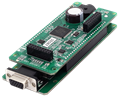

Документация для библиотеки libximc.


Libximc - потокобезопасная, кроссплатформенная библиотека для работы с контроллерами 8SMC4-USB и 8SMC5-USB.
Полная документация по контроллерам доступна по ссылке
Полная документация по API libximc доступна на странице ximc.h.
Что делает контроллер 8SMC4-USB и 8SMC5-USB.
- Поддерживает входные и выходные сигналы синхронизации для обеспечения совместной работы нескольких устройств в рамках сложной системы;.
- Работает со всеми компактными шаговыми двигателями с током обмотки до 3 А, без обратной связи, а так же с шаговыми двигателями, оснащенными энкодером в цепи обратной связи, в том числе линейным энкодером на позиционере.
- Управляет оборудованием с помощью готового ПО или с помощью библиотек для языков программирования: С/C++, C#, JAVA , Visual Basic, Python 2/3, .NET, Delphi, интеграция со средами программирования MS Visual Studio, gcc, Xcode.
- Работает с научными средами разработки путем интеграции LabVIEW и MATLAB;
Что умеет библиотека libximc.
- Libximc управляет оборудованием с использованием интерфейсов: USB 2.0., RS232 и Ethernet, также использует распространенный и проверенный интерфейс виртуального последовательного порта, поэтому вы можете работать с модулями управления моторами через эту библиотеку практически под всеми ОС, в том числе под Windows, Linux и Mac OS X.
- Библиотека libximc поддерживает подключение и отключение устройств "на лету". C одним устройством в каждый момент может работать не более одного экземпляра управляющей программы - множественный доступ управляющих программ к одному и тому же устройству не допускается.
- Предупреждения
- Библиотека открывает контроллер в режиме эксклюзивного доступа. Каждый контроллер, открытый билиотекой libximc (XiLab тоже использует эту билиотеку) должен быть закрыт, прежде чем может быть использован другим процессом. Поэтому прежде чем попытаться открыть контроллер заново, проверьте, что XiLab или другое программное обеспечение, взаимодействующее с контроллером, закрыто.
Пожалуйста, прочитайте Введение для начала работы с библиотекой.
Для того, чтобы использовать libximc в проекте, ознакомьтесь со страницей Как использовать с...
Содействие.
Большое спасибо всем, кто отправляет предложения, ошибки и идеи. Мы ценим ваши предложения и стараемся сделать наш продукт лучше. Пожалуйста, оставляйте свои вопросы сюда. Идеи и комментарии отправляйте нам на почту 8smc4@standa.lt